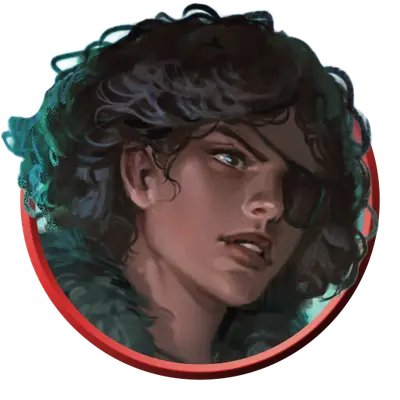

Дженнифер Везермэй-Фоксгроув
Gennifer Weathermay-Foxgrove
Средний Гуманоид (Человек, Ликантроп), Принципиальный Добрый, именной НИП

Класс Защиты 14 Инициатива +2 (12)
Хиты 44 (8к8 + 8)
Скорость 30 футов
| мод | спас | ||
|---|---|---|---|
| СИЛ | 10 | +0 | +0 |
| ЛОВ | 14 | +2 | +2 |
| ТЕЛ | 13 | +1 | +1 |
| мод | спас | ||
|---|---|---|---|
| ИНТ | 15 | +2 | +2 |
| МДР | 17 | +3 | +3 |
| ХАР | 10 | +0 | +0 |
Чувства пассивное Восприятие 13
Языки Общий, Драконий, Инфернальный
Опасность 3 (700 опыта; БВ +2)
Особенности
Подавленная ликантропия. Если Хиты Дженнифер опускаются до 0, она поддаётся ликантропии. Её статистика заменяется статистикой Верволка, но она сохраняет своё Мировоззрение и личность, а также значения Интеллекта, Мудрости и Харизмы, владения и известные языки. Затем она немедленно воскресает с полными Хитами в гибридной форме.
Действия
Мультиатака. Дженнифер совершает две атаки Освящённым кинжалом или Сияющим огоньком в любой комбинации.
Освящённый кинжал. Бросок рукопашной или дальнобойной атаки: +4, досягаемость 5 фт. или дистанция 20/60 фт. Попадание: 4 (1к4 + 2) Колющего урона плюс 9 (2к8) урона Излучением.
Сияющий огонёк. Бросок дальнобойной атаки: +5, дистанция 60 фт. Попадание: 14 (2к10 + 3) урона Излучением.
Эзотерический оберег (Перезарядка 6). Спасбросок Телосложения: Сл 13, все существа в 15-футовой Эманации, исходящей от Дженнифер. Провал: 18 (4к8) урона Излучением. Если цель — существо типа Нежить, она Ошеломлена до конца своего следующего хода.
Сотворение заклинаний. Дженнифер Везермэй-Фоксгроув сотворяет одно из следующих заклинаний (заклинательная характеристика — Мудрость, Сл спасброска заклинаний 13):
Неограниченно: Починка, Свет
1/день каждое: Защита от яда, Магический круг, Поиск животных или растений
Бонусные действия
Оккультная подмога (2/день). Дженнифер сотворяет Лечащее слово (заклинательная характеристика — та же, что для Сотворения заклинаний).
Бонус мастерства +2
Сёстры Везермэй-Фоксгроув
Отважные исследовательницы паранормального
Сёстры-близнецы Дженнифер и Лори Везермэй-Фоксгроув — охотницы на чудовищ, снискавшие репутацию героинь в домене Мордент, и слава эта расходится далеко за его пределы. Дочери мэра Морденшира, Алисы Везермэй, они часто бывают в семейном поместье — доме Хезер — или у своего названного дяди, доктора Рудольфа ван Рихтена.
В юности Дженнифер и Лори направили своё любопытство и склонность к проказам на разгадку местных тайн. Дядя девочек — прославленный охотник на чудовищ Джордж Везермэй — вернулся в Мордент вместе со своей невестой Натальей Воришковой как раз накануне их шестнадцатого дня рождения. Близняшки разгадали, что Наталья манипулирует их любимым дядей, и в конце концов разоблачили её: она оказалась верволком, использовавшим Джорджа, чтобы подобраться к Рудольфу ван Рихтену. После того как сёстры спасли дядю и доктора от верволчицы, Джордж и Рудольф поощрили их исследовательские инстинкты, взявшись обучать их ремеслу охотников на чудовищ.
С тех пор Дженнифер и Лори помогали Рудольфу в его изысканиях и приключениях по всем Землям Туманов. Со временем сёстры всё чаще стали действовать самостоятельно, объединяясь с такими героями, как Эсмеральда д’Авенир и Савра Санстар, чтобы расследовать загадки и истреблять зло в самых разных доменах.
Дженнифер освоила множество целительских и духовных практик — как традиционных, так и эзотерических — под руководством Рудольфа ван Рихтена. Она глубоко изучила ликантропию, чтобы вместе с сестрой выслеживать Наталью Воришкову, которая всё ещё на свободе. Втайне Дженнифер опасается, что после стычки с Натальей могла заразиться ликантропией сама. Пока у неё не проявилось ни единого признака проклятия, но она принимает снадобье собственного изготовления, чтобы подавить нежелательное превращение. Тихо, ни с кем не делясь, она продолжает изучать ликантропию в поисках лекарственного исцеления.